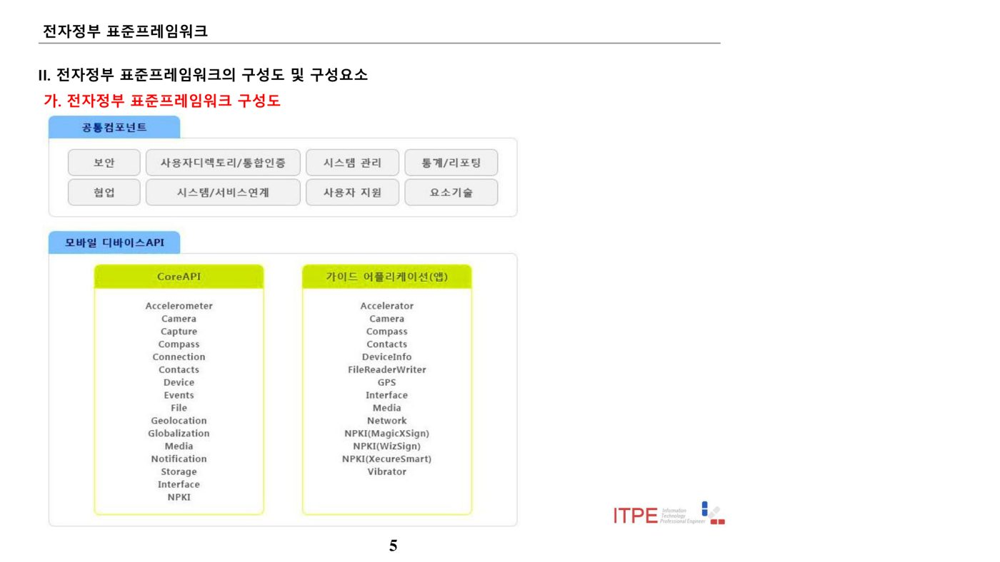
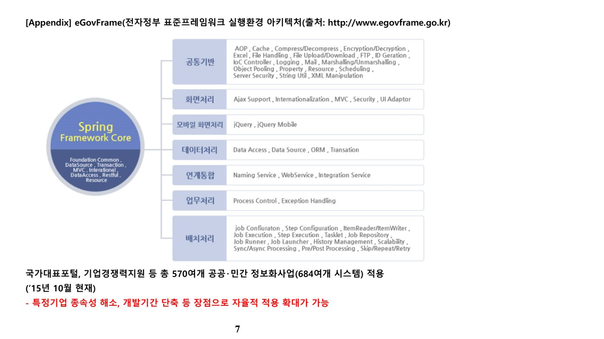
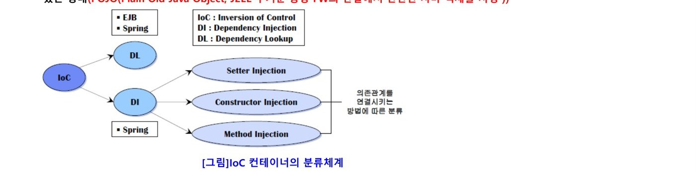
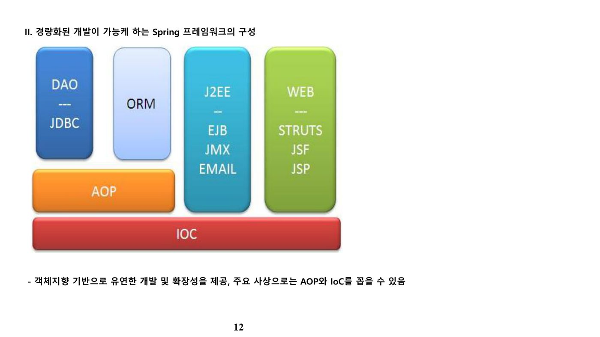

3. 전자정부 표준프레임워크
가. 개념 및 등장배경
전자정부 표준프레임워크(e-Government Framework)란 공공사업 정보화 시스템의 응용 SW 표준화, 품질 및 재사용성 향상을 목적으로 정부 주도하에 제작·배포·관리되는 정보시스템 개발 프레임워크이다.
공공 소프트웨어 개발 프로젝트에서 아키텍처 중심 개발을 지원하고, 프레임워크 컴포넌트 구성을 위한 오픈소스 소프트웨어 선정·평가 프로세스를 함께 제공한다.
- 공공 사업별 유사 컴포넌트의 중복 개발로 인한 국가 예산 낭비
- 공공 시스템의 선행업체에 대한 기술 종속성으로 의존도 심화
- 통일된 개발표준 부재로 상호운용성·재사용성 저하
- 대기업과 중소기업 간 기술 격차로 공정 경쟁에 불리
나. 주요 특징
| 구분 | 내용 |
|---|---|
| 개방형 표준 | 오픈소스 기반의 범용화·공개된 기술을 활용해 특정 사업자에 대한 종속성 배제 |
| 상용 솔루션 연계 | 상용 솔루션과 연계 가능한 표준을 제시해 상호운용성 보장 |
| 국가적 표준화 지향 | 민·관·학계로 구성된 자문협의회를 통해 국가 차원의 표준화 수행 |
| 변화 유연성 | 서비스별 모듈화로 교체가 용이하며, 인터페이스 기반 연동으로 모듈 간 변경영향 최소화 |
| 편리하고 다양한 환경 제공 | Eclipse 기반의 모델링(UML·ERD), 에디팅, 컴파일링, 디버깅 환경 제공 |
| 개방·참여형 프로젝트 | 오픈 커뮤니티를 기반으로 개발자·사용자 간 소통을 통한 진화 환경 제공 |
다. 버전별 변천
| 버전 | 발표시기 | 주요 내용 |
|---|---|---|
| V1.0 | '09.06 | 개발환경·운영환경·관리환경 및 공통 컴포넌트 최초 공개(실행환경 구성) |
| V2.0 | '11.11 | V1.0 대비 오픈소스 SW 업그레이드(Spring Framework 2.5.6 → 3.0.5 등) |
| V3.0 | '14.06 | 오픈소스 SW 39종(실행환경 26종·개발환경 13종) 업그레이드, DB기반 Property Service 등 실행환경 신규기능 추가, 템플릿 프로젝트 실행환경 3.0 반영 |
| V3.5 | '15.06 | Spring Framework 3.0.5 → 4.0.9 업그레이드, JDK 6 → 7(3.5.1부터 JDK 8 가능), 공통컴포넌트 버그 수정(총 62건), 모바일 화면처리·디바이스 API 라이브러리 업그레이드(jQuery Mobile, phoneGap 등) |
라. 구성 체계
표준프레임워크는 공통컴포넌트와 모바일 디바이스 API로 구성된다.
| 구분 | 세부 구성요소 |
|---|---|
| 공통컴포넌트 | 보안, 사용자디렉토리/통합인증, 시스템 관리, 통계/리포팅, 협업, 시스템/서비스연계, 사용자 지원, 요소기술 |
| 모바일 디바이스 API | Core API(Accelerometer, Camera, Compass, Connection, Contacts, Device, GPS, NPKI 등)와 가이드 애플리케이션(NPKI 인증모듈 MagicXSign·WizSign·XecureSmart 등)으로 구성 |

마. 실행환경(eGovFrame) 구조
실행환경 아키텍처는 Spring Framework Core(Foundation Common, DataSource, Transaction, MVC, Interational, DataAccess, Restful, Resource)를 중심에 두고, 아래 7개 영역의 기능을 계층적으로 제공한다.
| 영역 | 주요 기능 |
|---|---|
| 공통기반 | AOP, Cache, 압축/해제, 암복호화, Excel, 파일 처리·업로드/다운로드, FTP, IoC Controller, Logging, Mail, XML 처리, 스케줄링 등 |
| 화면처리 | Ajax 지원, 국제화, MVC, Security, UI Adaptor |
| 모바일 화면처리 | jQuery, jQuery Mobile |
| 데이터처리 | Data Access, Data Source, ORM, Transaction |
| 연계통합 | Naming Service, Web Service, Integration Service |
| 업무처리 | Process Control, Exception Handling |
| 배치처리 | Job/Step Configuration, ItemReader/ItemWriter, Job Execution·Launcher, History Management, Sync/Async Processing, Skip/Repeat/Retry 등 |

※ 국가대표포털·기업경쟁력지원 등 총 570여개 공공·민간 정보화사업(684여개 시스템)에 적용('15년 10월 기준). 특정기업 종속성 해소, 개발기간 단축 등 장점으로 자율적 적용이 확대되는 추세.
바. Spring Framework 핵심 개념
Spring은 자바 기반의 경량화된 컨테이너로, 다음 다섯 가지 특징을 중심으로 동작한다.
| 구분 | 설명 | 비고 |
|---|---|---|
| 객체관리 | 컨테이너에서 객체의 생성부터 소멸까지 직접 관리 | 개발자의 객체 생성·소멸 관리 부담 감소 |
| 제어반전(IoC) | 제어권이 개발자가 아닌 프레임워크(컨테이너)에 존재 — Inversion of Control | 스프링이 사용자 코드를 호출하는 구조("Don't call me, I will call you") |
| 의존성 주입(DI) | 계층·서비스 간 의존관계를 프레임워크가 상호 연결(Dependency Injection) | XML 설정파일(beans.xml)로 구성. SOLID의 DIP(의존성 역전 원칙)와는 별개 개념이므로 혼동 주의 |
| 관점지향 프로그래밍(AOP) | 여러 모듈에서 공통으로 쓰는 기능(트랜잭션 관리, 로깅, 보안 등)을 분리해 모듈화 | Crosscutting Concern 처리, AspectJ가 사실상 표준 |
| 영속성 | 데이터베이스 처리 라이브러리와의 인터페이스 제공 | JDBC, iBatis, Hibernate 등 지원 |
제어의 역전(IoC)은 객체 생성부터 생명주기 관리까지의 제어권이 개발자에서 컨테이너로 넘어간 것을 말한다. 서블릿·EJB 컨테이너는 서블릿·EJB에 대한 제어권만 컨테이너가 갖고 나머지 객체는 개발자가 직접 관리하는 반면, Spring 컨테이너는 대부분의 POJO(Plain Old Java Object)에 대한 제어권을 컨테이너가 가진다.
의존관계를 연결하는 방식은 개발자가 API로 빈(Bean)을 직접 찾는 DL(Dependency Lookup)과, 컨테이너가 설정 정보를 바탕으로 자동 연결해주는 DI(Dependency Injection)로 구분된다. DI의 유형은 다음과 같다.

| 유형 | 설명 |
|---|---|
| Setter Injection | Setter를 통해 클래스 사이의 의존관계를 연결 |
| Constructor Injection | 생성자를 통해 클래스 사이의 의존관계를 연결 |
| Method Injection | Singleton 인스턴스와 Non-Singleton 인스턴스의 의존관계를 연결 |
- DL(Dependency Lookup): 개발자가 코드에서 API로 직접 빈을 찾아온다 — 코드가 컨테이너를 알아야 함.
- DI(Dependency Injection): 컨테이너가 설정을 보고 알아서 연결해준다 — 코드는 컨테이너를 몰라도 됨. Spring의 기본 방식.
- SOLID 원칙의 DIP(Dependency Inversion Principle, 의존성 역전 원칙)는 "상위 모듈이 하위 모듈의 구현이 아닌 추상화에 의존해야 한다"는 설계 원칙으로, DI(의존성 주입)와 이름이 비슷하지만 별개의 개념이다.
사. Spring 모듈 구성 및 역할
Spring은 최하단의 IoC 컨테이너와 AOP를 기반으로, 그 위에 DAO/JDBC, ORM, J2EE(EJB·JMX·EMAIL), WEB(Struts·JSF·JSP) 네 축의 모듈을 두는 계층 구조이며, 객체지향 기반의 유연한 개발·확장성을 제공한다.

| 구성 모듈 | 기능 및 역할 | 세부기능 및 사례 |
|---|---|---|
| Core(IoC) | IoC Container로 객체 생성부터 소멸까지 관리, 객체 간 의존성 감소로 유연한 코드 변경·재사용 가능 | 컨테이너에 의한 Dependency Injection, 컴포넌트별 개별 테스트 가능 |
| AOP | 트랜잭션 관리·로깅 등 관심사를 모듈화(Crosscutting Concern)해 코드 변경 없이 추가·제거 가능 | Aspect = Advice + Pointcut, Join Point·Weaving, AspectJ(사실상 표준) |
| DAO | 단순화된 JDBC 기능(Database Access Object), 대부분의 ORM 프레임워크와 통합, 트랜잭션 관리 | JTA 기반 global transaction, 단일 데이터소스 기반 local transaction 지원 |
| ORM | 객체-관계 모델(Object Relational Mapping)로 DB와 객체 관계를 매핑, 다양한 DB 접속방식 지원 | Hibernate, iBatis, mybatis 등(Query+XML 방식 사용) |
| J2EE | 원격접근, EJB 대체·통합, 스케줄링·동적 언어 지원, 테스트 기반환경 제공 | POJO 기반 원격접근, JUnit 통합, 서버 없이도 통합 테스트 가능 |
| WEB | Spring Web MVC, 이벤트 기반 프레임워크, 타 웹 프레임워크와 대체·통합 가능 | Request 기반, JSP·PDF·Excel 등 다양한 View 기술 지원, Struts·WebWork·JSF 등과 연동 |
- Aspect: 공통 관심사(트랜잭션·로깅 등)를 모듈화한 단위 = Advice + Pointcut
- Advice: 실제로 실행될 공통 기능 코드(언제·무엇을 할지)
- Pointcut: Advice를 적용할 지점(Join Point)의 집합을 정의하는 표현식
- Weaving: Aspect를 대상 객체에 실제로 적용해 하나로 엮는 과정
아. 관련 기출 서술형 문제(참고)
- 최근 정부·공공기관 SW 개발 프로젝트에서 전자정부 표준 공통서비스 및 개발 프레임워크 적용이 확대되고 있다. 아키텍처 중심 SW 개발을 위한 프레임워크 개념과, 프레임워크 컴포넌트 구성을 위한 오픈소스 SW 선정·평가 프로세스를 설명하시오. (정보관리기술사 93회 3교시)
- 전자정부 표준프레임워크 2.5에 대하여 설명하시오. (모의고사)
- 전자정부 표준프레임워크(e-Government Framework) 버전별 차이점을 설명하시오. (정보관리기술사 108회 컴퓨터시스템응용 1교시)
- 스프링 프레임워크(Spring Framework)의 개념과 구성 모듈(Module)에 대하여 설명하시오. (정보관리기술사 99회 2교시)
- 스프링 프레임워크(Spring Framework)의 핵심기능 3가지에 대해 설명하시오. (모의고사)
📚 전체 기출·예상문제 (2문항) — 원문 수록
본 강좌 원본 PDF에 수록된 기출·예상문제를 빠짐없이 원문 그대로 정리했습니다. 정답·해설은 강의 원문 기준입니다.